2023 Temmuz ayında, ABD'nin Teksas eyaletinde düzenlenen Milletler Ligi finalinde Türk Kadın Voleybol Takımı, Çin'i 3-1 yenerek tarihinde ilk kez şampiyon olmayı başardı.

Türk Kadın Millî Voleybol Takımı, uluslararası arenada ilk defa 1957 yılında Ayten Salih, Nazmiye Kor, Güneş Çapa, Seta Yağcıoğlu, Ayda Caner, Seda Acudoğulu, Ümran Okay, Siray Arca, Fatma Egenen, Gülçin Eroğlu, Tomris Göksan ve Nezin Mutibaş gibi oyunculardan oluşan kadrosu ile İstanbul'da düzenlenen Uluslararası İstanbul Turnuvası'nda Romanya’ya karşı mücadele etti. Ancak, Türk takımının tarihindeki ilk zaferini 22 Temmuz 1961 tarihinde Batı Almanya'ya karşı 3-2'lik bir skorla elde ettiğini unutmamak gerekir.
Romanya'da gerçekleştirilen 1963 Avrupa Şampiyonası, Türkiye'nin katıldığı ilk Avrupa Şampiyonası olarak tarihe geçmiştir. Bu turnuvada Türkiye, 3 galibiyet ve 3 mağlubiyetle 13 takım arasında 10. sırada yer aldı.
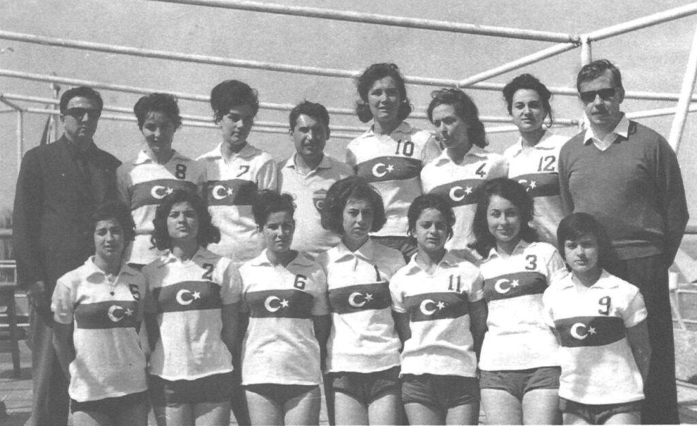Bir sonraki Avrupa Şampiyonası ise 1967 yılında Türkiye'de yapıldı. Burada Türkiye, 3 galibiyet ve 5 mağlubiyetle 15 takım arasında 12. sırada tamamladı.
Türkiye kadın millî voleybol takımı daha sonra ancak 1981 yılında yeniden Avrupa Şampiyonası'na katılma şansını yakalayabildi. Bulgaristan’da yapılan bu şampiyonada tüm maçlarını kaybeden ve sadece tek set alabilen kadın voleybol takımı on iki ülke arasında sonuncu oldu.
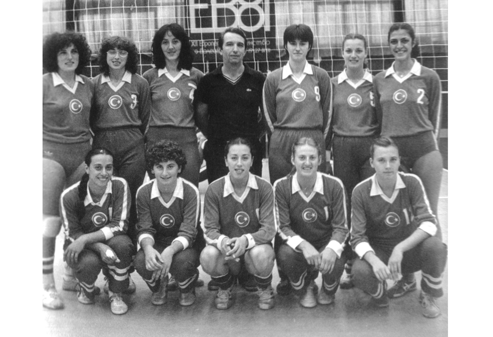1989'da Batı Almanya'da yapılan Avrupa Şampiyonası'nda Türkiye, 12 takım arasından 11. sırada yer aldı.
1995 Avrupa Şampiyonası'nda Hollanda'da yarışan Türk Kadın Millî Takımı, turnuvayı 12. sırada tamamladı.
2003 Avrupa Kadın Voleybol Şampiyonası, Türk Kadın Voleybolu'nun büyük bir başarısına sahne oldu. Takım, turnuva başlamadan bir hafta önce antrenör Deniz Esinduy’u kaybetmesine rağmen, Avrupa ikinciliği elde etmeyi başardı. Reşat Yazıcıoğulları'nın teknik direktörlüğündeki kadroda Bahar Mert, Esra Gümüş, Sinem Akap, Özlem Özçelik, Aysun Özbek, Natalia Hanikoğlu, Mesude Kuyan, Pelin Çelik, Çiğdem Can Rasna, Gülden Kayalar, Seda Tokatlıoğlu ve Neslihan Demir Darnel gibi oyuncular yer aldı.
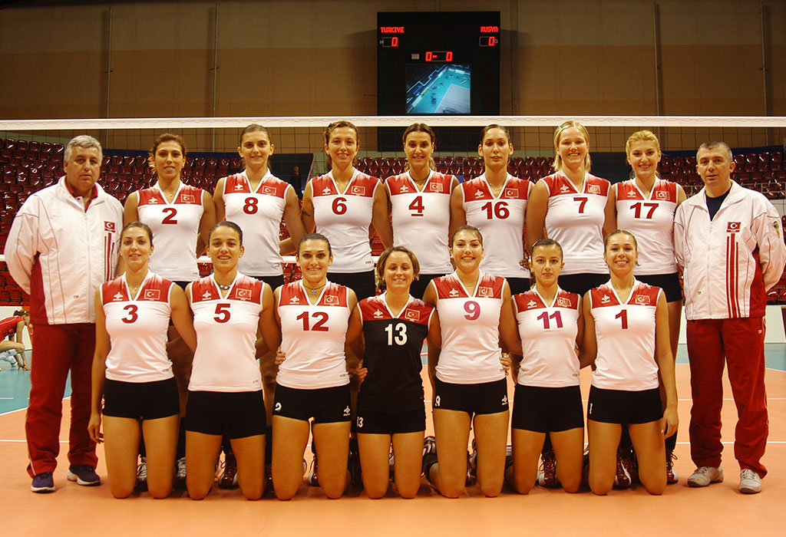2006 yılı, Türk Voleybolu için bir dönüm noktasıydı. Türkiye, Dünya Şampiyonası'na ilk kez katılarak şampiyonayı 10. sırada tamamladı. Bu şampiyonada, Türkiye'nin İtalya ile oynadığı maçta, Türk oyuncuları, saat 21:05'te Mustafa Kemal Atatürk’e saygı duruşunda bulunarak tarihe geçtiler.
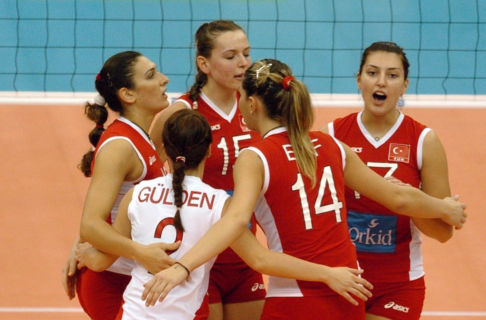Türk Kadın Millî Voleybol Takımı, 2005 Avrupa Şampiyonası'na ilk kez eleme oynamadan katılmayı başardı ve turnuvada 12 takım arasında 6. sırada yer aldı.
Polonya'da yapılan 2009 Avrupa Şampiyonası'nda Türkiye, çeyrek finale yükseldi ve puan, set ve sayı averajına göre 5. sırada yer aldı.
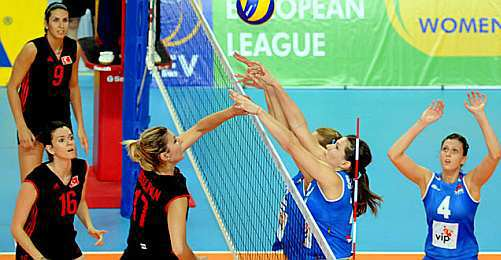2011 Avrupa Şampiyonası, Türk Kadın Voleybolu'nun tarihindeki önemli anlardan biriydi. Takım, bu turnuvada 3. olarak tarihindeki ikinci Avrupa madalyasını kazandı.
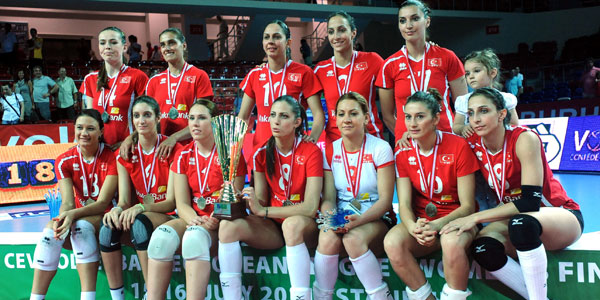2012 Londra Olimpiyatları'na katılma hakkı kazanan Türk Kadın Millî Voleybol Takımı, Çin'deki Grand Prix'de bronz madalya kazandı ve Olimpiyatları 9. sırada tamamladı.
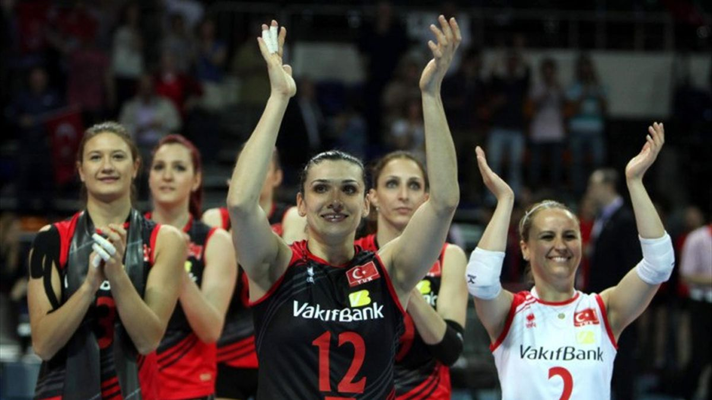2017 yılında İtalyan antrenör Giovanni Guidetti, Türk Kadın Millî Voleybol Takımı'nın başına geçti. Guidetti'nin yönetimindeki ekip, 2017 Avrupa Şampiyonası'nda 3. oldu ve 2019 yılında da 2. olarak büyük bir başarıya imza attı.
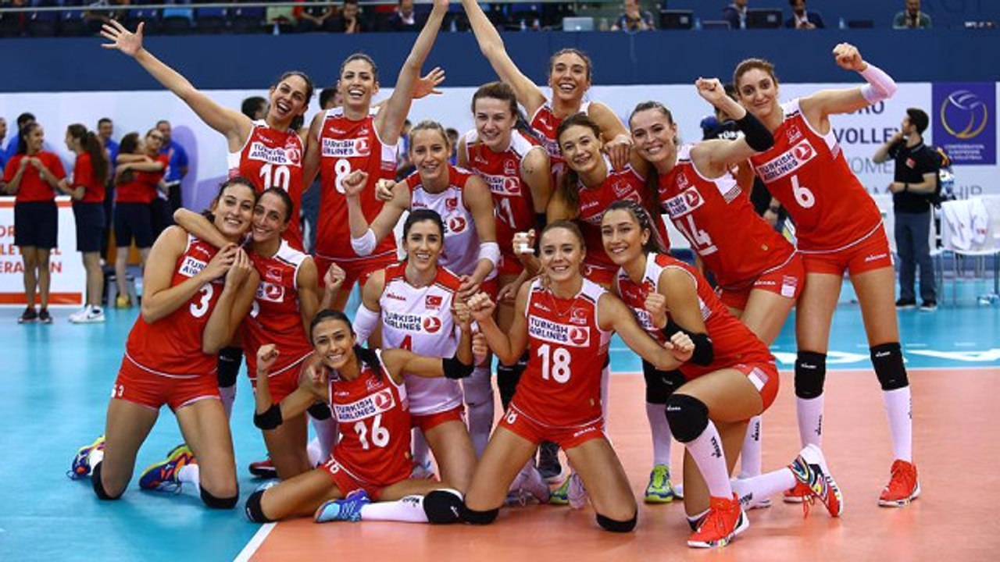Türk Kadın Millî Takımı, 2020 Tokyo Olimpiyatları'nda çeyrek finale çıkarak Güney Kore'ye elendi ve turnuvayı 5. sırada tamamladı.
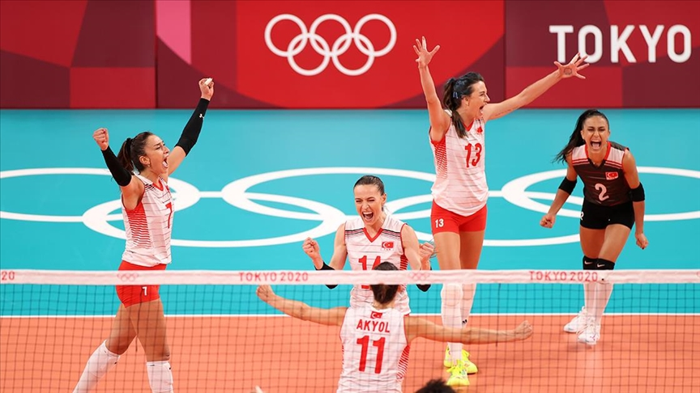Filenin Sultanları, Milletler Ligi'nde büyük bir başarı gösterdi. 2018'de 2. olurken, 2019 ve 2022'de 4. olmayı başardılar. 2021 yılında ise 3. oldular.
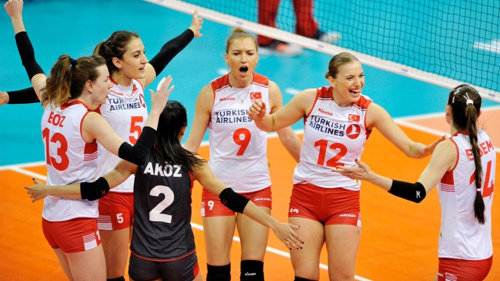2023 Temmuz ayında, ABD'nin Teksas eyaletinde düzenlenen Milletler Ligi finalinde Türk Kadın Voleybol Takımı, Çin'i 3-1 yenerek tarihinde ilk kez şampiyon olmayı başardı.
2023 yılında düzenlenen CEV Avrupa Şampiyonası finalinde, Türk takımı Sırbistan'ı 3-2 yenerek Avrupa Şampiyonu oldu. Bu zafer, Türk spor tarihinde takım sporlarında Avrupa Şampiyonu olan ilk takım olarak kaydedildi.
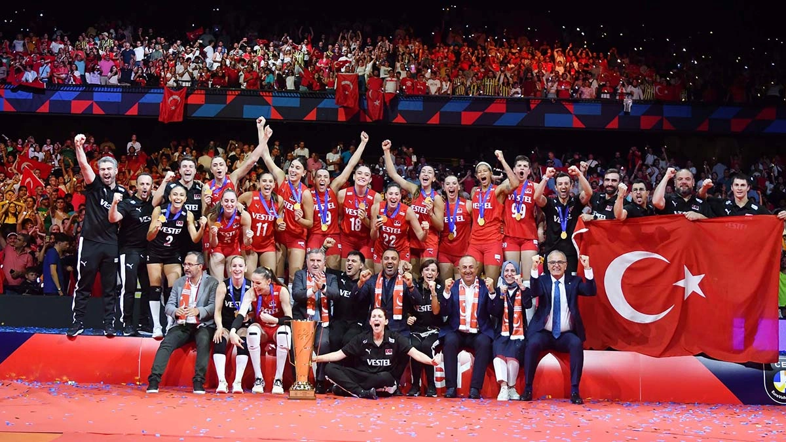2023 yılında FIVB Kadınlar Voleybol Olimpiyat Eleme Turnuvası'nda Türk Kadın Millî Takımı, oynadığı 7 karşılaşmadan da galip çıkarak turnuvayı namağlup bir şekilde zirvede tamamladı ve Dünya Kupası'nı kazandı.
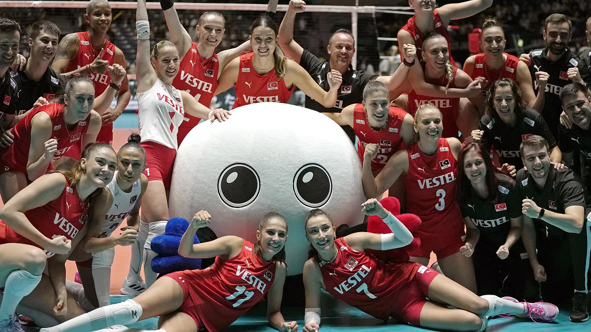Türk Kadın Millî Takımı, 2024 Paris Olimpiyatları'nı 4. sırada tamamladı.Çeyrek finalde Çin Halk Cumhuriyeti'ni 3-2 mağlup eden milli takım yarı finale yükseldi. Yarı final maçında İtalya'ya 3-0, üçüncülük maçında Brezilya’ya 3-1 mağlup oldu ve olimpiyat dördüncüsü oldu.
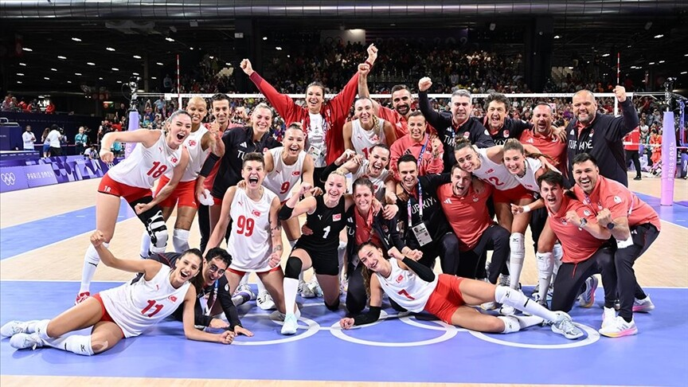